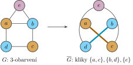
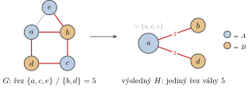

9.5 Úlohy navíc¶
V oddílu je sedm důkazů NP-úplnosti problémů kolem barvení a řezů (typ 4 testu) a jedna self-redukce s orákulem pro \(\href{ch-zoo-maxcut.html#prob-maxcut}{\class{woo-pk-prob-maxcut}{\prob{MaxCut}}}\) (typ 2). Úlohy se opírají o oddíly 9.1 a 9.2 a o redukce z cvičení 9.4. Úlohy jdou zhruba od lehčích k těžším.
Neoficiální úlohy
Úlohy v tomto oddílu nejsou oficiální zadání předmětu. Jsou to procvičovací úlohy navíc k látce kapitoly; všechny redukce jsme ověřili skripty hrubou silou oběma směry, s odpověďmi \(\ANO\) i \(\NE\): na všech grafech do 5 vrcholů a na stovkách náhodných grafů se 6–8 vrcholy (u bisekcí na všech grafech do 5, resp. 6 vrcholů). Self-redukci z úlohy 9.6 jsme pustili se simulovaným orákulem na stovkách grafů do 7 vrcholů.
9.5.1 Rozcvička¶
Úloha 9.1 (řez na tři části)
Problém \(\href{#un-9-1}{\class{woo-pk-pojem-max-3-cut}{\prob{Max 3-Cut}}}\). Vstup: graf \(G=(V,E)\) a číslo \(k\). Otázka: lze \(V\) rozdělit na tři disjunktní části \(V_1,V_2,V_3\) (některá smí být prázdná) tak, aby aspoň \(k\) hran mělo konce v různých částech?
Dokažte, že \(\href{#un-9-1}{\class{woo-pk-pojem-max-3-cut}{\prob{Max 3-Cut}}}\) je NP-úplný. Nápověda: převádějte z problému 3-Coloring.
Řešení
Redukce: \(\href{ch-zoo-3-coloring.html#prob-3col}{\class{woo-pk-prob-3col}{\prob{3-Coloring}}} \mathrel{\href{../ch-redukce/ch-redukce-jak-porovnat-slozitost-dvou-problemu.html#def-redukce}{\class{woo-pk-def-redukce}{\redp}}} \href{#un-9-1}{\class{woo-pk-pojem-max-3-cut}{\prob{Max 3-Cut}}}\), instance \(G=(V,E)\) \(\mapsto\) \((G,\ k=|E|)\).
1. \(\href{#un-9-1}{\class{woo-pk-pojem-max-3-cut}{\prob{Max 3-Cut}}}\) je v \(\href{../ch-np/ch-np-tridy-nedeterministicke-casove-slozitosti.html#def-ntime}{\class{woo-pk-def-ntime}{\NP}}\). Certifikát je rozdělení, tj. číslo části \(p(v)\in\{1,2,3\}\) pro každý vrchol. Projdeme hrany, spočítáme ty s \(p(u)\neq p(v)\) a porovnáme s \(k\), čas \(O(n+m)\).
2. Konstrukce. Graf ponecháme a za práh vezmeme počet všech hran: \(k=m=|E|\).
3. Polynomialita. Výstup je kopie vstupu a jedno číslo, čas \(O(n+m)\).
4. (\(\Rightarrow\)) Nechť \(c\colon V\to\{1,2,3\}\) je 3-obarvení \(G\). Položíme \(V_i=c^{-1}(i)\). Každá hrana spojuje vrcholy různých barev, má tedy konce v různých částech: přeříznuté jsou všechny \(m=k\) hrany.
5. (\(\Leftarrow\)) Nechť rozdělení \(V_1,V_2,V_3\) přeřízne aspoň \(k=m\) hran, tedy všechny. Položíme \(c(v)=i\) pro \(v\in V_i\). Žádná hrana nemá oba konce v téže části, takže \(c\) je 3-obarvení \(G\).
6. Závěr. \(\href{ch-zoo-3-coloring.html#prob-3col}{\class{woo-pk-prob-3col}{\prob{3-Coloring}}}\) je NP-úplný (věta 9.3), tedy \(\href{#un-9-1}{\class{woo-pk-pojem-max-3-cut}{\prob{Max 3-Cut}}}\) je NP-těžký a podle bodu 1 NP-úplný.
Proč to stejně nejde pro dvě části. Stejná úvaha dává \(\href{#ch-zoo-ulohy-navic-nez-zacnes}{\class{woo-pk-pojem-2coloring}{\prob{2-Coloring}}}\mathrel{\href{../ch-redukce/ch-redukce-jak-porovnat-slozitost-dvou-problemu.html#def-redukce}{\class{woo-pk-def-redukce}{\redp}}}\href{ch-zoo-maxcut.html#prob-maxcut}{\class{woo-pk-prob-maxcut}{\prob{MaxCut}}}\): graf je 2-obarvitelný, právě když má řez se všemi \(m\) hranami. To je ale redukce ze snadného problému (2-obarvení najde prohledávání do šířky) a o těžkosti \(\href{ch-zoo-maxcut.html#prob-maxcut}{\class{woo-pk-prob-maxcut}{\prob{MaxCut}}}\) nic neříká. Proto přednáška převádí na \(\href{ch-zoo-maxcut.html#prob-maxcut}{\class{woo-pk-prob-maxcut}{\prob{MaxCut}}}\) až z \(\href{../ch-sat/ch-sat-nae-3-sat-not-all-equal.html#prob-nae}{\class{woo-pk-prob-nae}{\prob{NAE-3-SAT}}}\) (redukce NAE-3-SAT ≤ₚ (vážený) MaxCut). U tří částí je práh \(k=m\) „zakódované 3-obarvení“ a těžkost přenese už sama identita.
Úloha 9.2 (přidělení kanálů)
Je dán graf \(G=(V,E)\) (vrcholy jsou vysílače, hrana spojuje vysílače, které by se mohly rušit) a číslo \(k\). Lze každému vysílači přidělit kanál \(f(v)\in\{1,\dots,k\}\) tak, aby se kanály sousedních vysílačů lišily aspoň o 2, tj. \(|f(u)-f(v)|\ge2\) pro každou hranu \(\{u,v\}\in E\)?
- Dokažte, že problém je NP-úplný. Nápověda: převádějte z problému 3-Coloring s \(k=5\).
- Pro která pevná \(k\) je problém v \(\href{../ch-cas/ch-cas-tridy-p-a-exp.html#def-tridy}{\class{woo-pk-def-tridy}{\PP}}\)?
(Zápis téhož problému jako SAT procvičuje typová úloha Typová úloha 3.3 [6 bodů].)
Řešení
Redukce: \(\href{ch-zoo-3-coloring.html#prob-3col}{\class{woo-pk-prob-3col}{\prob{3-Coloring}}} \mathrel{\href{../ch-redukce/ch-redukce-jak-porovnat-slozitost-dvou-problemu.html#def-redukce}{\class{woo-pk-def-redukce}{\redp}}} \href{#un-9-2}{\class{woo-pk-pojem-prideleni-kanalu}{\prob{Přidělení kanálů}}}\), instance \(G\) \(\mapsto\) \((G,\ k=5)\).
a) 1. Problém je v \(\href{../ch-np/ch-np-tridy-nedeterministicke-casove-slozitosti.html#def-ntime}{\class{woo-pk-def-ntime}{\NP}}\). Certifikát je přidělení \(f\colon V\to\{1,\dots,k\}\). Pro každou hranu ověříme \(|f(u)-f(v)|\ge2\), čas \(O(n+m)\) operací s čísly nejvýše \(k\).
2. Konstrukce. Graf ponecháme a položíme \(k=5\).
3. Polynomialita. Kopie vstupu a jedno číslo, čas \(O(n+m)\).
4. (\(\Rightarrow\)) Nechť \(c\colon V\to\{1,2,3\}\) je 3-obarvení \(G\). Barvu \(i\) převedeme na kanál \(2i-1\): \(f(v)=2c(v)-1\in\{1,3,5\}\). Pro hranu \(\{u,v\}\) je \(c(u)\neq c(v)\), a tedy \(|f(u)-f(v)|=2|c(u)-c(v)|\ge2\).
5. (\(\Leftarrow\)) Nechť \(f\colon V\to\{1,\dots,5\}\) je přípustné přidělení. Kanály spárujeme do barev: \(c(v)=\lceil f(v)/2\rceil\), tj. kanály \(1,2\) dají barvu 1, kanály \(3,4\) barvu 2 a kanál \(5\) barvu 3. Kdyby hrana \(\{u,v\}\) měla \(c(u)=c(v)=i\), ležely by \(f(u),f(v)\) v dvojici \(\{2i-1,2i\}\) a lišily by se nejvýše o 1 – spor s přípustností. Proto je \(c\) 3-obarvení \(G\).
6. Závěr. \(\href{ch-zoo-3-coloring.html#prob-3col}{\class{woo-pk-prob-3col}{\prob{3-Coloring}}}\) je NP-úplný, tedy přidělení kanálů je NP-těžké a podle bodu 1 NP-úplné.
b) Pevné \(k\). Body 4 a 5 fungují pro libovolné \(k\): kanál \(2i-1\) pro barvu \(i\le\lceil k/2\rceil\) je nejvýše \(2\lceil k/2\rceil-1\le k\) a párování \(c(v)=\lceil f(v)/2\rceil\) dá barvy \(1,\dots,\lceil k/2\rceil\). Přidělení s \(k\) kanály tedy existuje, právě když je \(G\) obarvitelný \(\lceil k/2\rceil\) barvami.
- \(k\in\{1,2\}\): jedna barva, tedy \(\ANO\), právě když \(G\) nemá žádnou hranu – v \(\href{../ch-cas/ch-cas-tridy-p-a-exp.html#def-tridy}{\class{woo-pk-def-tridy}{\PP}}\).
- \(k\in\{3,4\}\): dvě barvy, tedy test bipartitnosti prohledáváním do šířky – v \(\href{../ch-cas/ch-cas-tridy-p-a-exp.html#def-tridy}{\class{woo-pk-def-tridy}{\PP}}\).
- \(k\ge5\): \(\lceil k/2\rceil\ge3\) barev. Zobrazení \(G\mapsto(G,k)\) je redukce \(\lceil k/2\rceil\text{-}\href{../ch-resice-sat/ch-resice-sat-redukce-do-sat.html#ch-resice-sat-k-barevnost}{\class{woo-pk-pojem-coloring}{\prob{Coloring}}}\mathrel{\href{../ch-redukce/ch-redukce-jak-porovnat-slozitost-dvou-problemu.html#def-redukce}{\class{woo-pk-def-redukce}{\redp}}}\href{#un-9-2}{\class{woo-pk-pojem-prideleni-kanalu}{\prob{Přidělení kanálů}}}\) (pro \(k=5\) je to a), pro \(k=6\) totéž se třemi barvami) a barvení pevným počtem aspoň tří barev je NP-úplné (úloha 9.4 (o barvu víc)). Problém je NP-úplný.
Pokud \(\href{../ch-cas/ch-cas-tridy-p-a-exp.html#def-tridy}{\class{woo-pk-def-tridy}{\PP}}\neq\href{../ch-np/ch-np-tridy-nedeterministicke-casove-slozitosti.html#def-ntime}{\class{woo-pk-def-ntime}{\NP}}\), je problém v \(\href{../ch-cas/ch-cas-tridy-p-a-exp.html#def-tridy}{\class{woo-pk-def-tridy}{\PP}}\) přesně pro \(k\le4\). (Skript potvrdil ekvivalenci s \(\lceil k/2\rceil\)-obarvením pro \(k=1,\dots,6\) na všech grafech do 5 vrcholů.)
Úloha 9.3 (řez s přesně \(k\) hranami)
Problém \(\href{#un-9-3}{\class{woo-pk-pojem-exact-cut}{\prob{Exact Cut}}}\). Vstup: graf \(G=(V,E)\) a číslo \(k\). Otázka: existuje rozdělení \(V=A\cup B\), které přeřízne přesně \(k\) hran?
Dokažte, že \(\href{#un-9-3}{\class{woo-pk-pojem-exact-cut}{\prob{Exact Cut}}}\) je NP-úplný. Proč nestačí identita \((G,k)\mapsto(G,k)\) z problému \(\href{ch-zoo-maxcut.html#prob-maxcut}{\class{woo-pk-prob-maxcut}{\prob{MaxCut}}}\)?
Řešení
Redukce: \(\href{ch-zoo-maxcut.html#prob-maxcut}{\class{woo-pk-prob-maxcut}{\prob{MaxCut}}} \mathrel{\href{../ch-redukce/ch-redukce-jak-porovnat-slozitost-dvou-problemu.html#def-redukce}{\class{woo-pk-def-redukce}{\redp}}} \href{#un-9-3}{\class{woo-pk-pojem-exact-cut}{\prob{Exact Cut}}}\), instance \((G,k)\) \(\mapsto\) \((G',\ k+m)\), kde \(G'\) je \(G\) s \(m=|E|\) přidanými samostatnými hranami.
1. \(\href{#un-9-3}{\class{woo-pk-pojem-exact-cut}{\prob{Exact Cut}}}\) je v \(\href{../ch-np/ch-np-tridy-nedeterministicke-casove-slozitosti.html#def-ntime}{\class{woo-pk-def-ntime}{\NP}}\). Certifikát je rozdělení \((A,B)\); spočítáme přeříznuté hrany a porovnáme s \(k\), čas \(O(n+m)\).
2. Konstrukce. K \(G=(V,E)\) přidáme \(2m\) nových vrcholů \(p_1,q_1,\dots,p_m,q_m\) a \(m\) nových hran \(\{p_i,q_i\}\) (párování, nové hrany nemají společné vrcholy s ničím jiným). Práh je \(k'=k+m\).
3. Polynomialita. \(G'\) má \(n+2m\) vrcholů a \(2m\) hran, sestrojíme ho v čase \(O(n+m)\).
Pozorování. Hranu \(\{p_i,q_i\}\) přeřízneme, nebo ne, nezávisle na zbytku grafu: stačí dát \(p_i\) a \(q_i\) na různé, nebo na stejnou stranu. Rozdělení \(G'\) je tedy rozdělení \(G\) a k tomu libovolný počet \(j\in\{0,\dots,m\}\) přeříznutých nových hran.
4. (\(\Rightarrow\)) Nechť řez \((A,B)\) grafu \(G\) přeřízne \(c\ge k\) hran; zároveň \(c\le m\). Položme \(j=k+m-c\). Z \(c\le m\) plyne \(j\ge k\ge0\) a z \(c\ge k\) plyne \(j\le m\). Přeřízneme přesně \(j\) nových hran a dostaneme rozdělení \(G'\) s \(c+j=k+m\) přeříznutými hranami.
5. (\(\Leftarrow\)) Nechť rozdělení \(G'\) přeřízne přesně \(k+m\) hran, z toho \(j\le m\) nových. Na vrcholech \(V\) pak přeřízne \(c=k+m-j\ge k\) hran \(G\) – to je řez grafu \(G\) s aspoň \(k\) hranami. (Je-li \(k>m\), má \(G'\) jen \(2m<k+m\) hran a obě instance mají odpověď \(\NE\); zvláštní případ ošetřovat nemusíme.)
6. Závěr. \(\href{ch-zoo-maxcut.html#prob-maxcut}{\class{woo-pk-prob-maxcut}{\prob{MaxCut}}}\) je NP-úplný (i bez vah, redukce vážený MaxCut ≤ₚ MaxCut), tedy \(\href{#un-9-3}{\class{woo-pk-pojem-exact-cut}{\prob{Exact Cut}}}\) je NP-těžký a podle bodu 1 NP-úplný.
Proč ne identita. Graf může mít řez s aspoň \(k\) hranami a přitom žádný s přesně \(k\). Trojúhelník \(K_3\) má jen řezy velikosti 0 (vše na jedné straně) a 2 (jeden vrchol proti dvěma): \((K_3,1)\) je pro \(\href{ch-zoo-maxcut.html#prob-maxcut}{\class{woo-pk-prob-maxcut}{\prob{MaxCut}}}\) \(\ANO\), pro \(\href{#un-9-3}{\class{woo-pk-pojem-exact-cut}{\prob{Exact Cut}}}\) \(\NE\). Samostatné hrany slouží jako „drobné“: řez, který je příliš velký, dorovnají na přesný počet.
9.5.2 Základní úlohy¶
Úloha 9.4 (o barvu víc)
Pro pevné \(k\ge1\) je \(k\text{-}\href{../ch-resice-sat/ch-resice-sat-redukce-do-sat.html#ch-resice-sat-k-barevnost}{\class{woo-pk-pojem-coloring}{\prob{Coloring}}}\) problém „je graf \(G\) obarvitelný \(k\) barvami?“. Dokažte, že \(k\text{-}\href{../ch-resice-sat/ch-resice-sat-redukce-do-sat.html#ch-resice-sat-k-barevnost}{\class{woo-pk-pojem-coloring}{\prob{Coloring}}}\mathrel{\href{../ch-redukce/ch-redukce-jak-porovnat-slozitost-dvou-problemu.html#def-redukce}{\class{woo-pk-def-redukce}{\redp}}}(k+1)\text{-}\href{../ch-resice-sat/ch-resice-sat-redukce-do-sat.html#ch-resice-sat-k-barevnost}{\class{woo-pk-pojem-coloring}{\prob{Coloring}}}\), a odvoďte, že \(k\text{-}\href{../ch-resice-sat/ch-resice-sat-redukce-do-sat.html#ch-resice-sat-k-barevnost}{\class{woo-pk-pojem-coloring}{\prob{Coloring}}}\) je NP-úplný pro každé \(k\ge3\). Proč tímto způsobem nedostaneme NP-úplnost \(\href{#ch-zoo-ulohy-navic-nez-zacnes}{\class{woo-pk-pojem-2coloring}{\prob{2-Coloring}}}\)?
Řešení
Redukce: \(k\text{-}\href{../ch-resice-sat/ch-resice-sat-redukce-do-sat.html#ch-resice-sat-k-barevnost}{\class{woo-pk-pojem-coloring}{\prob{Coloring}}} \mathrel{\href{../ch-redukce/ch-redukce-jak-porovnat-slozitost-dvou-problemu.html#def-redukce}{\class{woo-pk-def-redukce}{\redp}}} (k+1)\text{-}\href{../ch-resice-sat/ch-resice-sat-redukce-do-sat.html#ch-resice-sat-k-barevnost}{\class{woo-pk-pojem-coloring}{\prob{Coloring}}}\), instance \(G\) \(\mapsto\) \(G'=G\) s novým vrcholem \(u\) spojeným se všemi vrcholy.
1. \((k+1)\text{-}\href{../ch-resice-sat/ch-resice-sat-redukce-do-sat.html#ch-resice-sat-k-barevnost}{\class{woo-pk-pojem-coloring}{\prob{Coloring}}}\) je v \(\href{../ch-np/ch-np-tridy-nedeterministicke-casove-slozitosti.html#def-ntime}{\class{woo-pk-def-ntime}{\NP}}\). Certifikát je obarvení \(c\colon V\to\{1,\dots,k+1\}\). Projdeme všechny hrany a zkontrolujeme \(c(v)\neq c(w)\), čas \(O(n+m)\).
2. Konstrukce. Pro \(G=(V,E)\) s \(n\) vrcholy a \(m\) hranami sestrojíme \(G'=(V\cup\{u\},\ E\cup\{uv\mid v\in V\})\), kde \(u\) je nový (univerzální) vrchol.
3. Polynomialita. \(G'\) má \(n+1\) vrcholů a \(m+n\) hran, sestrojíme ho v čase \(O(n+m)\).
4. (\(\Rightarrow\)) Nechť \(c\) je obarvení \(G\) barvami \(1,\dots,k\). Položíme \(c(u)=k+1\). Hrany z \(E\) jsou v pořádku jako v \(G\), hrana \(uv\) spojuje barvu \(k+1\) s barvou \(c(v)\le k\). Je to obarvení \(G'\) barvami \(1,\dots,k+1\).
5. (\(\Leftarrow\)) Nechť \(c'\) je obarvení \(G'\) barvami \(1,\dots,k+1\) a \(c'(u)=j\). Každý \(v\in V\) sousedí s \(u\), takže \(c'(v)\neq j\): vrcholy \(V\) používají jen zbylých \(k\) barev. Hrany \(G\) jsou i v \(G'\), takže \(c'\) zúžené na \(V\) (s přečíslováním zbylých barev na \(1,\dots,k\)) je platné \(k\)-obarvení \(G\).
6. Závěr. \(\href{ch-zoo-3-coloring.html#prob-3col}{\class{woo-pk-prob-3col}{\prob{3-Coloring}}}\) je NP-úplný (věta 9.3). Indukcí podle \(k\): je-li \(k\text{-}\href{../ch-resice-sat/ch-resice-sat-redukce-do-sat.html#ch-resice-sat-k-barevnost}{\class{woo-pk-pojem-coloring}{\prob{Coloring}}}\) NP-těžký, je podle redukce NP-těžký i \((k+1)\text{-}\href{../ch-resice-sat/ch-resice-sat-redukce-do-sat.html#ch-resice-sat-k-barevnost}{\class{woo-pk-pojem-coloring}{\prob{Coloring}}}\) a spolu s bodem 1 NP-úplný. Tedy \(k\text{-}\href{../ch-resice-sat/ch-resice-sat-redukce-do-sat.html#ch-resice-sat-k-barevnost}{\class{woo-pk-pojem-coloring}{\prob{Coloring}}}\) je NP-úplný pro každé \(k\ge3\). (Přímo: \(\href{ch-zoo-3-coloring.html#prob-3col}{\class{woo-pk-prob-3col}{\prob{3-Coloring}}}\mathrel{\href{../ch-redukce/ch-redukce-jak-porovnat-slozitost-dvou-problemu.html#def-redukce}{\class{woo-pk-def-redukce}{\redp}}} k\text{-}\href{../ch-resice-sat/ch-resice-sat-redukce-do-sat.html#ch-resice-sat-k-barevnost}{\class{woo-pk-pojem-coloring}{\prob{Coloring}}}\) přidáním \(k-3\) univerzálních vrcholů, které spolu tvoří kliku.) NP-úplný je tedy i problém \(\href{../ch-resice-sat/ch-resice-sat-redukce-do-sat.html#ch-resice-sat-k-barevnost}{\class{woo-pk-pojem-coloring}{\prob{Coloring}}}\) se vstupem \((G,k)\): \(\href{ch-zoo-3-coloring.html#prob-3col}{\class{woo-pk-prob-3col}{\prob{3-Coloring}}}\mathrel{\href{../ch-redukce/ch-redukce-jak-porovnat-slozitost-dvou-problemu.html#def-redukce}{\class{woo-pk-def-redukce}{\redp}}}\href{../ch-resice-sat/ch-resice-sat-redukce-do-sat.html#ch-resice-sat-k-barevnost}{\class{woo-pk-pojem-coloring}{\prob{Coloring}}}\) zobrazením \(G\mapsto(G,3)\).
Proč ne \(\href{#ch-zoo-ulohy-navic-nez-zacnes}{\class{woo-pk-pojem-2coloring}{\prob{2-Coloring}}}\). Redukce \(1\text{-}\href{../ch-resice-sat/ch-resice-sat-redukce-do-sat.html#ch-resice-sat-k-barevnost}{\class{woo-pk-pojem-coloring}{\prob{Coloring}}}\mathrel{\href{../ch-redukce/ch-redukce-jak-porovnat-slozitost-dvou-problemu.html#def-redukce}{\class{woo-pk-def-redukce}{\redp}}}\href{#ch-zoo-ulohy-navic-nez-zacnes}{\class{woo-pk-pojem-2coloring}{\prob{2-Coloring}}}\) je správná, ale \(1\text{-}\href{../ch-resice-sat/ch-resice-sat-redukce-do-sat.html#ch-resice-sat-k-barevnost}{\class{woo-pk-pojem-coloring}{\prob{Coloring}}}\) („nemá \(G\) žádnou hranu?“) je v \(\href{../ch-cas/ch-cas-tridy-p-a-exp.html#def-tridy}{\class{woo-pk-def-tridy}{\PP}}\). Redukce ze snadného problému o těžkosti nic neříká – těžkost se přenáší jen z problému, o kterém ji už víme. A \(\href{#ch-zoo-ulohy-navic-nez-zacnes}{\class{woo-pk-pojem-2coloring}{\prob{2-Coloring}}}\) je v \(\href{../ch-cas/ch-cas-tridy-p-a-exp.html#def-tridy}{\class{woo-pk-def-tridy}{\PP}}\) (prohledávání do šířky), takže by NP-úplný mohl být jen při \(\href{../ch-cas/ch-cas-tridy-p-a-exp.html#def-tridy}{\class{woo-pk-def-tridy}{\PP}}=\href{../ch-np/ch-np-tridy-nedeterministicke-casove-slozitosti.html#def-ntime}{\class{woo-pk-def-ntime}{\NP}}\).
Pozor na rovinnost (nad rámec přednášky). Pro \(\href{ch-zoo-3-coloring.html#prob-planar}{\class{woo-pk-prob-planar}{\prob{Planar 3-Coloring}}}\) by stejný trik dával „\(\prob{Planar 4-Coloring}\) je NP-těžký“. Odpověď je ale vždy \(\ANO\) (věta o 4 barvách), problém je tedy v \(\href{../ch-cas/ch-cas-tridy-p-a-exp.html#def-tridy}{\class{woo-pk-def-tridy}{\PP}}\) a jeho NP-těžkost by znamenala \(\href{../ch-cas/ch-cas-tridy-p-a-exp.html#def-tridy}{\class{woo-pk-def-tridy}{\PP}}=\href{../ch-np/ch-np-tridy-nedeterministicke-casove-slozitosti.html#def-ntime}{\class{woo-pk-def-ntime}{\NP}}\). Chyba: univerzální vrchol rovinnost obecně ničí, např. z rovinného \(K_4\) udělá nerovinný \(K_5\). Výstup redukce pak není instancí rovinné varianty.
Úloha 9.5 (pokrytí klikami)
Problém \(\href{#un-9-5}{\class{woo-pk-pojem-clique-cover}{\prob{Clique Cover}}}\): je dán graf \(G=(V,E)\) a číslo \(k\). Lze \(V\) rozdělit na nejvýše \(k\) disjunktních množin \(Q_1,\dots,Q_j\) (\(j\le k\)) tak, aby každá \(Q_i\) byla klika (každé dva její vrcholy jsou v \(G\) spojené hranou)? Dokažte, že \(\href{#un-9-5}{\class{woo-pk-pojem-clique-cover}{\prob{Clique Cover}}}\) je NP-úplný. Nápověda: převádějte z problému 3-Coloring.
Řešení
Redukce: \(\href{ch-zoo-3-coloring.html#prob-3col}{\class{woo-pk-prob-3col}{\prob{3-Coloring}}} \mathrel{\href{../ch-redukce/ch-redukce-jak-porovnat-slozitost-dvou-problemu.html#def-redukce}{\class{woo-pk-def-redukce}{\redp}}} \href{#un-9-5}{\class{woo-pk-pojem-clique-cover}{\prob{Clique Cover}}}\), instance \(G\) \(\mapsto\) \((\overline G,\ 3)\), kde \(\overline G\) je doplněk grafu \(G\).
1. \(\href{#un-9-5}{\class{woo-pk-pojem-clique-cover}{\prob{Clique Cover}}}\) je v \(\href{../ch-np/ch-np-tridy-nedeterministicke-casove-slozitosti.html#def-ntime}{\class{woo-pk-def-ntime}{\NP}}\). Certifikát je přiřazení \(q\colon V\to\{1,\dots,k\}\) (číslo množiny pro každý vrchol). Pro každou dvojici vrcholů se stejným číslem ověříme, že je spojená hranou: \(O(n^2)\) dvojic.
2. Konstrukce. Z \(G=(V,E)\) sestrojíme \(\overline G=(V,\overline E)\), kde \(\{u,v\}\in\overline E\), právě když \(u\neq v\) a \(\{u,v\}\notin E\), a položíme \(k=3\).
3. Polynomialita. \(\overline G\) má \(n\) vrcholů a \(\binom n2-m\) hran, projdeme všechny dvojice: čas \(O(n^2)\).
Pozorování. Množina \(Q\subseteq V\) je nezávislá v \(G\), právě když je klikou v \(\overline G\) (každé dva vrcholy \(Q\) nejsou spojené v \(G\) \(\iff\) jsou spojené v \(\overline G\)). Barevná třída obarvení je přesně nezávislá množina.
4. (\(\Rightarrow\)) Nechť \(c\colon V\to\{1,2,3\}\) je 3-obarvení \(G\) a \(V_i=c^{-1}(i)\). Každá \(V_i\) je nezávislá v \(G\), tedy klika v \(\overline G\). Neprázdné množiny z \(V_1,V_2,V_3\) (je jich nejvýše 3) rozdělují \(V\) na kliky grafu \(\overline G\).
5. (\(\Leftarrow\)) Nechť \(V=Q_1\cup\dots\cup Q_j\), \(j\le3\), je rozdělení na kliky grafu \(\overline G\). Položme \(c(v)=i\) pro \(v\in Q_i\). Kdyby hrana \(uv\in E\) měla oba konce v téže \(Q_i\), byly by \(u,v\) spojené v \(\overline G\), tedy \(uv\notin E\) – spor. Každá hrana \(G\) má konce v různých množinách, \(c\) je 3-obarvení \(G\).
6. Závěr. \(\href{ch-zoo-3-coloring.html#prob-3col}{\class{woo-pk-prob-3col}{\prob{3-Coloring}}}\) je NP-úplný, tedy \(\href{#un-9-5}{\class{woo-pk-pojem-clique-cover}{\prob{Clique Cover}}}\) je NP-těžký a podle bodu 1 NP-úplný.

„Domeček“ \(G\) (čtverec \(abcd\) se střechou \(e\)) a jeho doplněk \(\overline G\) s hranami \(ac,bd,ce,de\). Barevné třídy \(\{a,c\}\), \(\{b,d\}\), \(\{e\}\) jsou v \(G\) nezávislé a v \(\overline G\) jsou to kliky (tlustě). Všimni si: totéž zobrazení funguje i obráceně, \(\href{#un-9-5}{\class{woo-pk-pojem-clique-cover}{\prob{Clique Cover}}}\) a barvení doplňku jsou jeden a týž problém. Proto je \(\href{#un-9-5}{\class{woo-pk-pojem-clique-cover}{\prob{Clique Cover}}}\) s \(k=2\) v \(\href{../ch-cas/ch-cas-tridy-p-a-exp.html#def-tridy}{\class{woo-pk-def-tridy}{\PP}}\): stačí otestovat prohledáváním do šířky, zda je \(\overline G\) 2-obarvitelný.
Úloha 9.6 (maximální řez pomocí orákula)
Máte k dispozici orákulum, které pro graf \(H\) s kladnými celočíselnými vahami hran a číslo \(k\) v jednom kroku odpoví, zda má \(H\) řez váhy alespoň \(k\) (rozhodovací verze váženého \(\href{ch-zoo-maxcut.html#prob-maxcut}{\class{woo-pk-prob-maxcut}{\prob{MaxCut}}}\)). Je dán graf \(G=(V,E)\) bez vah, \(n=|V|\), \(m=|E|\).
- Pomocí orákula najděte maximální řez grafu \(G\), tj. rozdělení \(V=A\cup B\) s největším počtem přeříznutých hran.
- Zdůvodněte správnost a odhadněte počet dotazů vzhledem k \(n\) a \(m\). Proč se hodí orákulum pro vážený problém?
Řešení
Redukce s orákulem: \(\href{ch-zoo-maxcut.html#prob-maxcut}{\class{woo-pk-prob-maxcut}{\prob{MaxCut}}}\) – nalezení maximálního řezu \(\to\) vážený \(\href{ch-zoo-maxcut.html#prob-maxcut}{\class{woo-pk-prob-maxcut}{\prob{MaxCut}}}\) – rozhodovací verze. Jak: binárním vyhledáváním zjistíme velikost \(k^*\) maximálního řezu, pak vrcholy po jednom zkoušíme sloučit s pevným vrcholem \(v_1\) a orákulem hlídáme, že maximum zůstalo \(k^*\).
Značení: \(O(H,k)\) je odpověď orákula; graf \(G\) bereme jako vážený s vahami 1. Sloučení vrcholu \(v\) do vrcholu \(s\): hrana \(\{s,v\}\) zmizí, každá hrana \(\{v,u\}\) se stane hranou \(\{s,u\}\), a vzniknou-li tak dvě hrany \(\{s,u\}\), nahradíme je jednou hranou se součtem vah. Výsledný graf značíme \(H/\{s,v\}\).
Tvrzení. Řezy grafu \(H/\{s,v\}\) odpovídají vzájemně jednoznačně řezům grafu \(H\), v nichž jsou \(s\) a \(v\) na stejné straně, a mají stejnou váhu. Je-li totiž \(v\) na straně \(s\), je hrana \(\{v,u\}\) přeříznutá, právě když je přeříznutá \(\{s,u\}\) – sečtení vah to přesně započítá – a hrana \(\{s,v\}\) přeříznutá není.
a) Algoritmus.
- Hodnota optima. Maximální řez má velikost v intervalu \([0,m]\). Binárním vyhledáváním: dokud \(lo<hi\), polož \(k=\lceil(lo+hi)/2\rceil\) a zeptej se \(O(G,k)\); při \(\ANO\) polož \(lo:=k\), jinak \(hi:=k-1\). Začíná se \(lo=0\), \(hi=m\); výsledek je \(k^*:=lo\).
- Slučování. \(H:=G\), \(s:=v_1\), \(A:=\{v_1\}\), \(B:=\emptyset\). Pro \(v=v_2,\dots,v_n\) se zeptej \(O(H/\{s,v\},\,k^*)\). Při \(\ANO\) polož \(H:=H/\{s,v\}\) a \(A:=A\cup\{v\}\), při \(\NE\) polož \(B:=B\cup\{v\}\).
- Vydej rozdělení \((A,B)\).
b) Invariant. Vrchol \(s\) zastupuje všechny vrcholy množiny \(A\). Podle tvrzení jsou řezy grafu \(H\) právě řezy grafu \(G\), v nichž je celé \(A\) na jedné straně, a mají stejnou váhu; žádný proto nemá víc než \(k^*\). Navíc \(H\) má řez váhy \(k^*\): na začátku je \(H=G\) a krok s odpovědí \(\ANO\) to zaručí odpovědí orákula.
Proč je \((A,B)\) maximální řez. Podle invariantu má výsledný graf \(H\) řez váhy \(k^*\); \(s\) je v něm na jedné straně. Vezměme \(v\in B\). Když jsme \(v\) testovali, měl tehdejší graf \(H_v\) odpověď \(\NE\), tedy podle tvrzení žádný jeho řez s \(v\) na straně \(s\) nemá váhu \(k^*\). Výsledný \(H\) vznikl z \(H_v\) jen dalším slučováním do \(s\), jeho řezy jsou tedy řezy \(H_v\). Kdyby byl \(v\) v optimálním řezu výsledného \(H\) na straně \(s\), byl by to řez \(H_v\) váhy \(k^*\) s \(v\) na straně \(s\) – spor. Všechny vrcholy \(B\) jsou tedy na druhé straně než \(s\) a optimální řez výsledného \(H\) je přesně \((A,B)\). Jeho váha je \(k^*\), což je podle kroku 1 největší možný řez \(G\).
Počet dotazů. Binární vyhledávání na \(m+1\) hodnotách: \(\lceil\log_2(m+1)\rceil\) dotazů; slučování: \(n-1\) dotazů. Celkem \(\lceil\log_2(m+1)\rceil+n-1=O(n+\log m)\). Každý dotazovaný graf má nejvýše \(n\) vrcholů a \(m\) hran a váhy jsou nejvýše \(m\), takže dotazy mají polynomiální velikost.
Proč vážený problém. Řešením je rozdělení všech vrcholů, nejde tedy jen vyškrtávat části vstupu jako u \(\href{../ch-cisla/ch-cisla-ciselne-problemy.html#prob-subsetsum}{\class{woo-pk-prob-subsetsum}{\prob{Subset Sum}}}\) (typová úloha Typová úloha 2.4 [6 bodů]). Částečné řešení „\(v\) je na straně \(v_1\)“ zakódujeme sloučením, a tím vzniknou rovnoběžné hrany, tedy váhy. Orákulum, které váhy umí, takové dotazy zodpoví přímo. Stačilo by i orákulum bez vah: dotaz \((H,k)\) převedeme redukcí Redukce: vážený MaxCut ≤ₚ MaxCut na \((H',\ k+2W)\), kde \(W\le m\) je součet vah; \(H'\) má nejvýše \(n+2m\) vrcholů a \(3m\) hran, takže dotazy zůstanou polynomiálně velké.
Příklad. „Domeček“ s vrcholy \(a,b,c,d,e\) a hranami \(ab,bc,cd,da,ea,eb\) (\(m=6\)), \(v_1=a\).
| dotaz | odpověď | akce |
|---|---|---|
| \(O(G,3)\), \(O(G,5)\), \(O(G,6)\) | \(\ANO\), \(\ANO\), \(\NE\) | \(k^*=5\) |
| sloučit \(b\): hrany \(ac\), \(ad\), \(cd\) (váha 1), \(ae\) (2) | \(\NE\) (max. 4) | \(b\in B\) |
| sloučit \(c\): hrany \(ab\) (2), \(ad\) (2), \(ae\) (1), \(be\) (1) | \(\ANO\) (max. 5) | \(c\in A\) |
| sloučit \(d\): hrany \(ab\) (2), \(ae\) (1), \(be\) (1) | \(\NE\) (max. 3) | \(d\in B\) |
| sloučit \(e\): hrany \(ab\) (3), \(ad\) (2) | \(\ANO\) (max. 5) | \(e\in A\) |
Výsledek \(A=\{a,c,e\}\), \(B=\{b,d\}\) po \(3+4=7\) dotazech; přeříznuté jsou hrany \(ab,bc,cd,da,eb\). (Sloučený vrchol dál značíme \(a\).)

Vlevo nalezený maximální řez domečku, vpravo graf \(H\) po sloučení \(c\) a \(e\) do \(a\): hrany \(bc\) a \(eb\) se přidaly k hraně \(ab\) (váha 3), hrana \(cd\) k hraně \(ad\) (váha 2). Všimni si: řez \(\{a,c\}\) / \(\{b,d,e\}\) je také maximální, ale slučování si vybere jeden z nich.
9.5.3 Těžší úlohy¶
Úloha 9.7 (bisekce: maximální i minimální)
Bisekce grafu s \(2h\) vrcholy je rozdělení \(V=A\cup B\) s \(|A|=|B|=h\). Problém \(\href{#un-9-7}{\class{woo-pk-pojem-max-bisection}{\prob{Max Bisection}}}\): je dán graf \(G\) se sudým počtem vrcholů a číslo \(k\); existuje bisekce, která přeřízne aspoň \(k\) hran? Problém \(\href{#un-9-7}{\class{woo-pk-pojem-min-bisection}{\prob{Min Bisection}}}\): totéž s „nejvýše \(k\) hran“.
- Dokažte, že \(\href{#un-9-7}{\class{woo-pk-pojem-max-bisection}{\prob{Max Bisection}}}\) je NP-úplný. Nápověda: převádějte z MaxCut. Proč nestačí identita?
- Dokažte, že \(\href{#un-9-7}{\class{woo-pk-pojem-min-bisection}{\prob{Min Bisection}}}\) je NP-úplný, ačkoli \(\prob{MinCut}\) je v \(\href{../ch-cas/ch-cas-tridy-p-a-exp.html#def-tridy}{\class{woo-pk-def-tridy}{\PP}}\).
Řešení
Redukce: a) \(\href{ch-zoo-maxcut.html#prob-maxcut}{\class{woo-pk-prob-maxcut}{\prob{MaxCut}}} \mathrel{\href{../ch-redukce/ch-redukce-jak-porovnat-slozitost-dvou-problemu.html#def-redukce}{\class{woo-pk-def-redukce}{\redp}}} \href{#un-9-7}{\class{woo-pk-pojem-max-bisection}{\prob{Max Bisection}}}\), instance \((G,k)\) \(\mapsto\) \((G',\ k)\), kde \(G'\) je \(G\) s \(n\) přidanými izolovanými vrcholy; b) \(\href{#un-9-7}{\class{woo-pk-pojem-max-bisection}{\prob{Max Bisection}}} \mathrel{\href{../ch-redukce/ch-redukce-jak-porovnat-slozitost-dvou-problemu.html#def-redukce}{\class{woo-pk-def-redukce}{\redp}}} \href{#un-9-7}{\class{woo-pk-pojem-min-bisection}{\prob{Min Bisection}}}\), instance \((G,k)\) s \(|V|=2h\) \(\mapsto\) \((\overline G,\ h^2-k)\).
a) 1. \(\href{#un-9-7}{\class{woo-pk-pojem-max-bisection}{\prob{Max Bisection}}}\) je v \(\href{../ch-np/ch-np-tridy-nedeterministicke-casove-slozitosti.html#def-ntime}{\class{woo-pk-def-ntime}{\NP}}\). Certifikát je rozdělení \((A,B)\); ověříme \(|A|=|B|\), spočteme přeříznuté hrany a porovnáme s \(k\), čas \(O(n+m)\).
2. Konstrukce. Pro \(G=(V,E)\) s \(n\) vrcholy sestrojíme \(G'=(V\cup I,\ E)\), kde \(I\) je \(n\) nových vrcholů bez hran; \(k\) ponecháme. \(G'\) má \(2n\) vrcholů, tedy sudý počet.
3. Polynomialita. Přidáme \(n\) vrcholů, čas \(O(n+m)\).
4. (\(\Rightarrow\)) Nechť řez \((A,B)\) grafu \(G\) přeřízne aspoň \(k\) hran, \(|A|=p\), \(|B|=n-p\). Do \(A\) přidáme \(n-p\) vrcholů z \(I\) a do \(B\) zbylých \(p\). Vznikne \(A'\), \(B'\) s \(|A'|=|B'|=n\), tedy bisekce \(G'\). Izolované vrcholy nemají hrany, takže přeříznuté jsou stejné hrany jako předtím – aspoň \(k\).
5. (\(\Leftarrow\)) Nechť bisekce \((A',B')\) grafu \(G'\) přeřízne aspoň \(k\) hran. Položme \(A=A'\cap V\), \(B=B'\cap V\); to je rozdělení \(V\). Všechny hrany \(G'\) jsou hrany \(G\) a hrana je přeříznutá \((A,B)\), právě když je přeříznutá \((A',B')\). Řez \((A,B)\) má tedy aspoň \(k\) hran.
6. Závěr. \(\href{ch-zoo-maxcut.html#prob-maxcut}{\class{woo-pk-prob-maxcut}{\prob{MaxCut}}}\) je NP-úplný (i bez vah, redukce \(\prob{vážený MaxCut} \redp \prob{MaxCut}\)), tedy \(\href{#un-9-7}{\class{woo-pk-pojem-max-bisection}{\prob{Max Bisection}}}\) je NP-těžký a podle bodu 1 NP-úplný.
Proč ne identita. Maximální řez může být nevyvážený. Hvězda \(K_{1,3}\) (střed \(s\), listy \(l_1,l_2,l_3\)) má maximální řez 3 (\(\{s\}\) proti listům), ale každá bisekce dá \(s\) k jednomu listu a přeřízne jen 2 hrany. Izolované vrcholy slouží jako „výplň“, kterou se libovolný řez dorovná na bisekci, aniž se změní počet přeříznutých hran. (Pro liché \(n\) by identita nebyla ani instancí.)

Vlevo hvězda bez výplně, vpravo s výplní: řez \(\{s\}\) proti listům se doplní třemi izolovanými vrcholy na straně \(A'\) a jedním na straně \(B'\) (malé kroužky).
b) Konstrukce. Z instance \((G,k)\) \(\href{#un-9-7}{\class{woo-pk-pojem-max-bisection}{\prob{Max Bisection}}}\) s \(|V|=2h\) sestrojíme \((\overline G,\ h^2-k)\); je-li \(k>h^2\), vypíšeme pevnou \(\NE\)-instanci (\(K_2\) s \(k=0\): jediná bisekce přeřízne 1 hranu).
Klíčová rovnost. Pro každou bisekci \((A,B)\) je každá dvojice \(\{a,b\}\) s \(a\in A\), \(b\in B\) hranou právě jednoho z grafů \(G\), \(\overline G\). Takových dvojic je \(|A|\cdot|B|=h^2\), tedy
Body 1–6. \(\href{#un-9-7}{\class{woo-pk-pojem-min-bisection}{\prob{Min Bisection}}}\in\href{../ch-np/ch-np-tridy-nedeterministicke-casove-slozitosti.html#def-ntime}{\class{woo-pk-def-ntime}{\NP}}\) stejně jako v a). Doplněk sestrojíme v čase \(O(n^2)\). (\(\Rightarrow\)) Bisekce s \(\mathrm{cut}_G\ge k\) má podle rovnosti \(\mathrm{cut}_{\overline G}=h^2-\mathrm{cut}_G\le h^2-k\). (\(\Leftarrow\)) Bisekce \(\overline G\) s \(\mathrm{cut}_{\overline G}\le h^2-k\) je i bisekcí \(G\) a má \(\mathrm{cut}_G=h^2-\mathrm{cut}_{\overline G}\ge k\). (Pro \(k>h^2\) jsou obě odpovědi \(\NE\), protože řez má nejvýše \(h^2\) hran.) Spolu s a) je \(\href{#un-9-7}{\class{woo-pk-pojem-min-bisection}{\prob{Min Bisection}}}\) NP-úplný.
Proč to není spor s \(\prob{MinCut}\in\href{../ch-cas/ch-cas-tridy-p-a-exp.html#def-tridy}{\class{woo-pk-def-tridy}{\PP}}\). \(\prob{MinCut}\) hledá nejmenší řez s oběma stranami neprázdnými, ale bez podmínky na velikost stran – to umí toky. Těžkost přináší právě podmínka \(|A|=|B|\): vyvážený řez může být mnohem větší než nejmenší řez bez podmínky.
Úloha 9.8 (3-barvení grafů se stupněm nejvýše 4)
Dokažte, že \(\href{ch-zoo-3-coloring.html#prob-3col}{\class{woo-pk-prob-3col}{\prob{3-Coloring}}}\) zůstane NP-úplný, i když má každý vrchol vstupního grafu stupeň nejvýše 4.
Nápověda: vrchol stupně \(d\) nahraďte \(d\) kopiemi, každou pro jednu jeho hranu. Stejnou barvu kopií vynuťte gadgetem: hrana \(\{x,y\}\) a tři vrcholy, z nichž každý sousedí s \(x\) i s \(y\).
Řešení
Redukce: \(\href{ch-zoo-3-coloring.html#prob-3col}{\class{woo-pk-prob-3col}{\prob{3-Coloring}}} \mathrel{\href{../ch-redukce/ch-redukce-jak-porovnat-slozitost-dvou-problemu.html#def-redukce}{\class{woo-pk-def-redukce}{\redp}}} \href{ch-zoo-3-coloring.html#prob-3col}{\class{woo-pk-prob-3col}{\prob{3-Coloring}}}\) se stupni nejvýše 4, instance \(G\) \(\mapsto\) \(G'\), kde každý vrchol stupně \(d\ge1\) nahradí řetěz \(d\) gadgetů s \(d\) kopiemi.
1. V \(\href{../ch-np/ch-np-tridy-nedeterministicke-casove-slozitosti.html#def-ntime}{\class{woo-pk-def-ntime}{\NP}}\). Je to speciální případ \(\href{ch-zoo-3-coloring.html#prob-3col}{\class{woo-pk-prob-3col}{\prob{3-Coloring}}}\): certifikát je obarvení, ověříme hrany v čase \(O(n+m)\) (a stupně vstupu spočítáme také v lineárním čase).
Gadget. Hrana \(\{x,y\}\) a tři terminály \(t_1,t_2,t_3\), každý spojený s \(x\) i s \(y\) (7 hran). V každém 3-obarvení mají \(x\) a \(y\) dvě různé barvy a každý terminál musí mít tu třetí: všechny tři terminály mají stejnou barvu. Naopak pro libovolnou barvu \(c\) terminálů lze \(x,y\) obarvit zbylými dvěma barvami. Vrcholy \(x,y\) mají v gadgetu stupeň 4, terminály stupeň 2.
2. Konstrukce. Vrchol \(v\) stupně \(0\) ponecháme. Vrchol \(v\) se sousedy \(u_1,\dots,u_d\), \(d\ge1\), nahradíme vrcholy
- \(e_{v,1},\dots,e_{v,d}\) – kopie \(v\); kopie \(e_{v,i}\) „patří“ hraně \(\{v,u_i\}\),
- \(s_{v,1},\dots,s_{v,d+1}\) – spojky řetězu,
- \(x_{v,i},y_{v,i}\) pro \(i=1,\dots,d\) – gadget \(i\) s terminály \(s_{v,i}\), \(e_{v,i}\), \(s_{v,i+1}\).
Za každou hranu \(\{u,v\}\) grafu \(G\) přidáme jednu hranu mezi kopií \(v\), která patří této hraně, a kopií \(u\), která patří této hraně.

Vrchol \(v\) stupně 3 se sousedy \(u_1,u_2,u_3\) (indexy \(v\) vynecháváme). Terminály (modře) mají v každém 3-obarvení stejnou barvu, \(x_i\) a \(y_i\) zbylé dvě. Stupně: \(x_i,y_i\) mají 4, vnitřní spojky \(s_2,s_3\) mají 4 (dva gadgety), krajní spojky 2 a kopie \(e_i\) mají \(2+1=3\).
Stupně. \(x_{v,i},y_{v,i}\): 4; spojka \(s_{v,i}\) leží v nejvýše dvou gadgetech: nejvýše 4; kopie \(e_{v,i}\) leží v jednom gadgetu a má jednu hranu ven: 3; izolovaný vrchol: 0. Graf \(G'\) má tedy všechny stupně nejvýše 4.
3. Polynomialita. Vrchol stupně \(d\ge1\) dá \(d+(d+1)+2d=4d+1\) vrcholů a \(7d\) hran, k tomu jedna hrana za každou hranu \(G\). Protože \(\sum_v d_v=2m\), má \(G'\) nejvýše \(8m+n\) vrcholů a přesně \(14m+m=15m\) hran; sestrojíme ho v čase \(O(n+m)\).
4. (\(\Rightarrow\)) Nechť \(c\) je 3-obarvení \(G\). Všem kopiím a spojkám vrcholu \(v\) dáme barvu \(c(v)\) a v každém jeho gadgetu dostanou \(x_{v,i},y_{v,i}\) zbylé dvě barvy. Hrany gadgetů jsou v pořádku (terminál má jinou barvu než \(x\) i \(y\), ty se liší navzájem). Hrana mezi kopií \(u\) a kopií \(v\) spojuje barvy \(c(u)\neq c(v)\), protože \(\{u,v\}\in E\). Je to 3-obarvení \(G'\).
5. (\(\Leftarrow\)) Nechť \(c'\) je 3-obarvení \(G'\). V gadgetu \(i\) vrcholu \(v\) mají terminály \(s_{v,i}\), \(e_{v,i}\), \(s_{v,i+1}\) stejnou barvu. Sousední gadgety sdílejí spojku, takže barva se přenese po celém řetězu: všechny kopie a spojky vrcholu \(v\) mají jednu barvu, označme ji \(c(v)\) (izolovaný vrchol si barvu nechá). Pro hranu \(\{u,v\}\in E\) vede v \(G'\) hrana mezi kopií \(u\) a kopií \(v\), takže \(c(u)\neq c(v)\). Funkce \(c\) je 3-obarvení \(G\).
6. Závěr. \(\href{ch-zoo-3-coloring.html#prob-3col}{\class{woo-pk-prob-3col}{\prob{3-Coloring}}}\) je NP-úplný (věta 9.3), tedy je NP-úplný i na grafech se stupni nejvýše 4.
Proč ne obyčejný řetěz. Přirozený pokus je spojit kopie \(e_1,e_2,\dots\) za sebou „kosočtverci“ (hrana \(xy\) a dva konce spojené s oběma): to také vynutí stejné barvy, ale vnitřní kopie by pak měla \(2+2\) hrany v kosočtvercích a \(1\) hranu ven, tedy stupeň 5. Třetí terminál v gadgetu odděluje „kopie s hranou ven“ (\(e_i\), stupeň 3) od „článků řetězu“ (\(s_i\), stupeň 4).
Poznámka (nad rámec přednášky). Pro stupeň nejvýše 3 už 3-barvení těžké není: podle Brooksovy věty je souvislý graf s maximálním stupněm 3 obarvitelný třemi barvami, kromě \(K_4\). Stačí tedy hledat komponentu \(K_4\). Hranice mezi \(\href{../ch-cas/ch-cas-tridy-p-a-exp.html#def-tridy}{\class{woo-pk-def-tridy}{\PP}}\) a NP-úplností leží mezi stupněm 3 a 4.